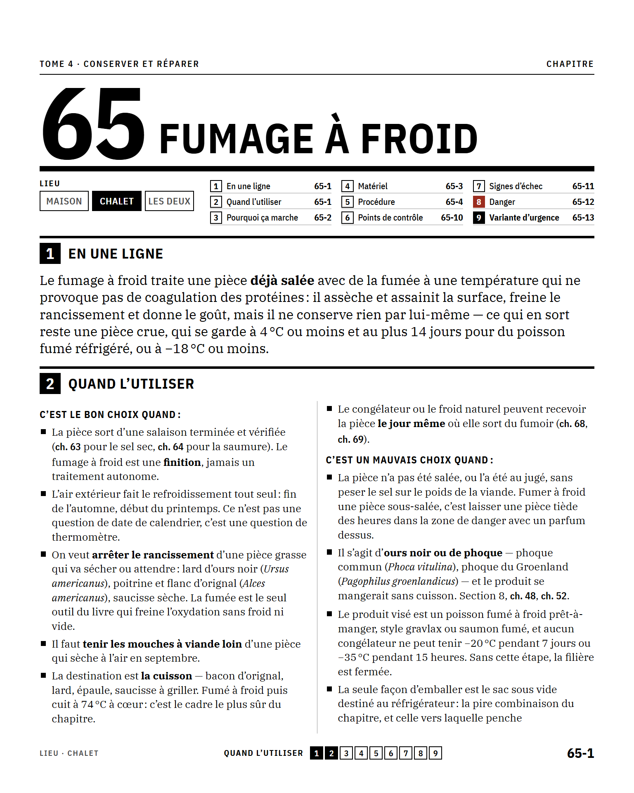
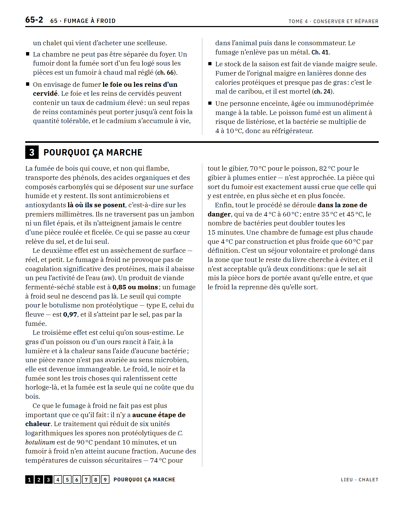
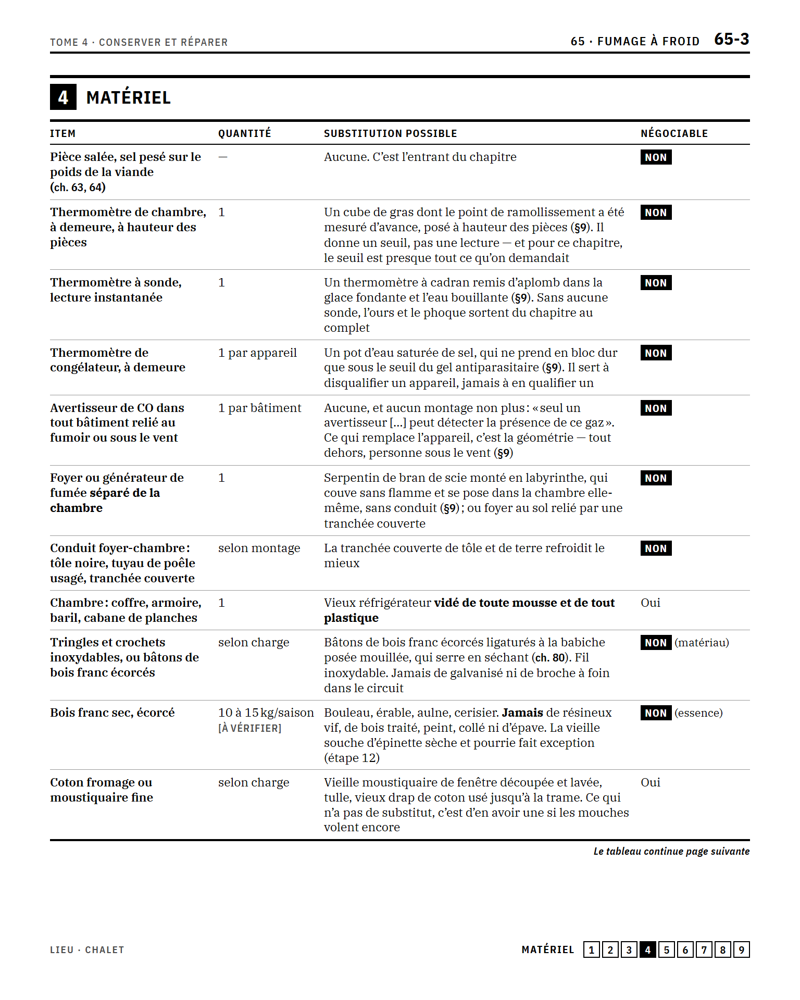
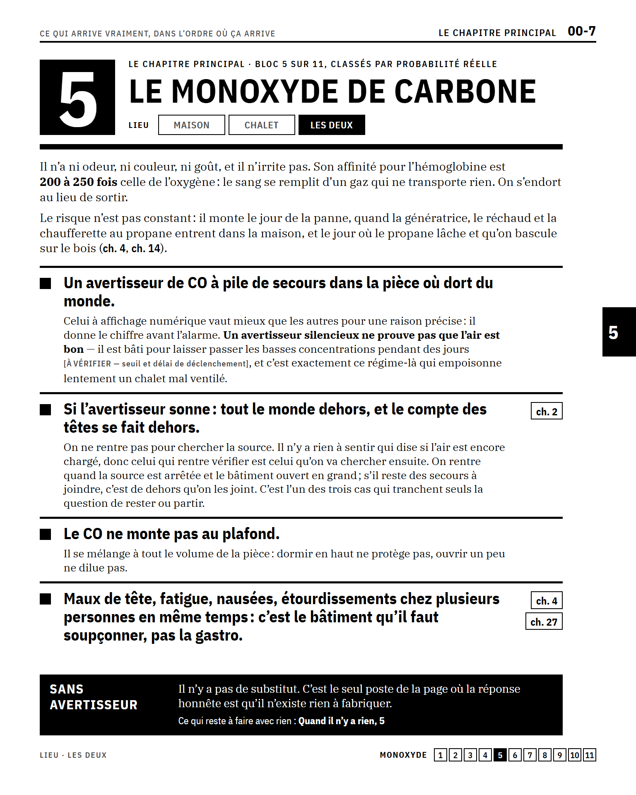
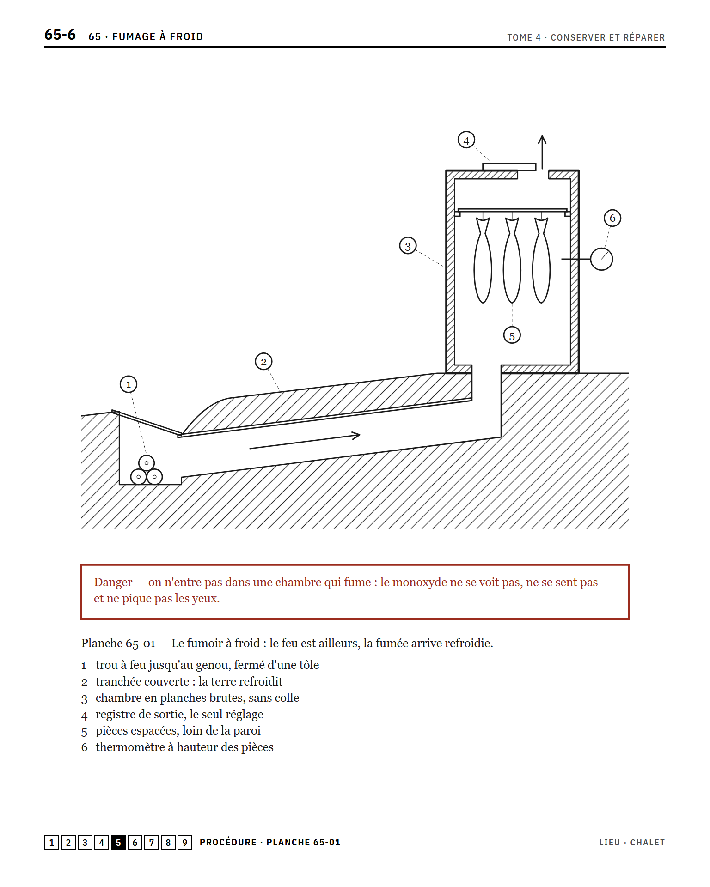
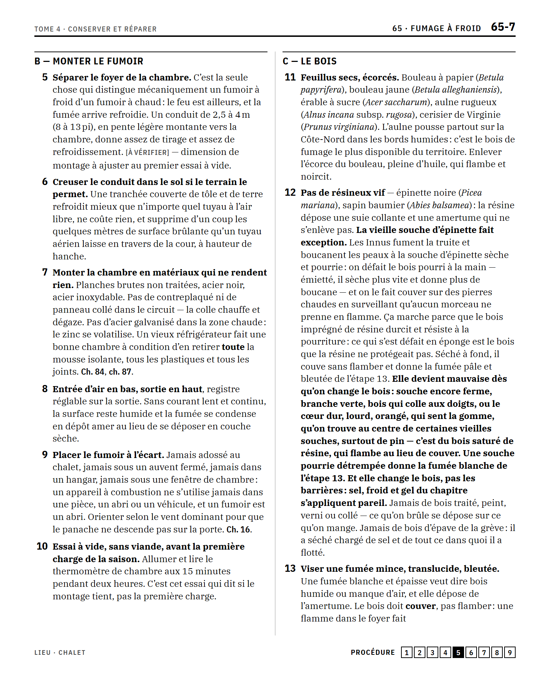
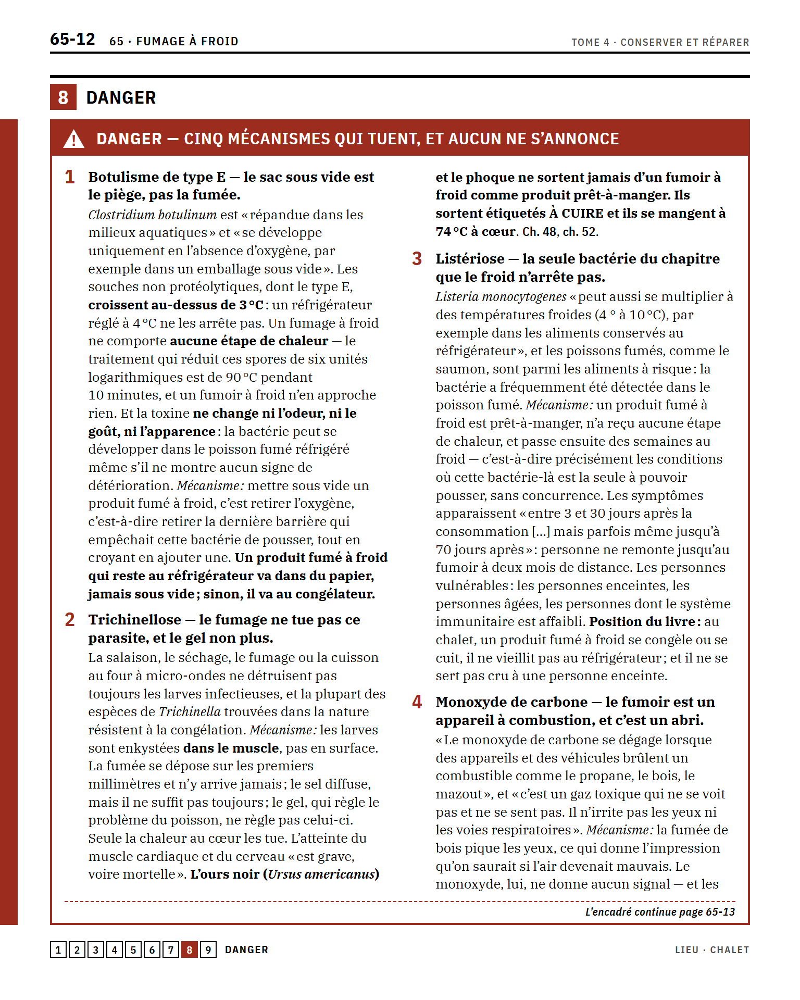
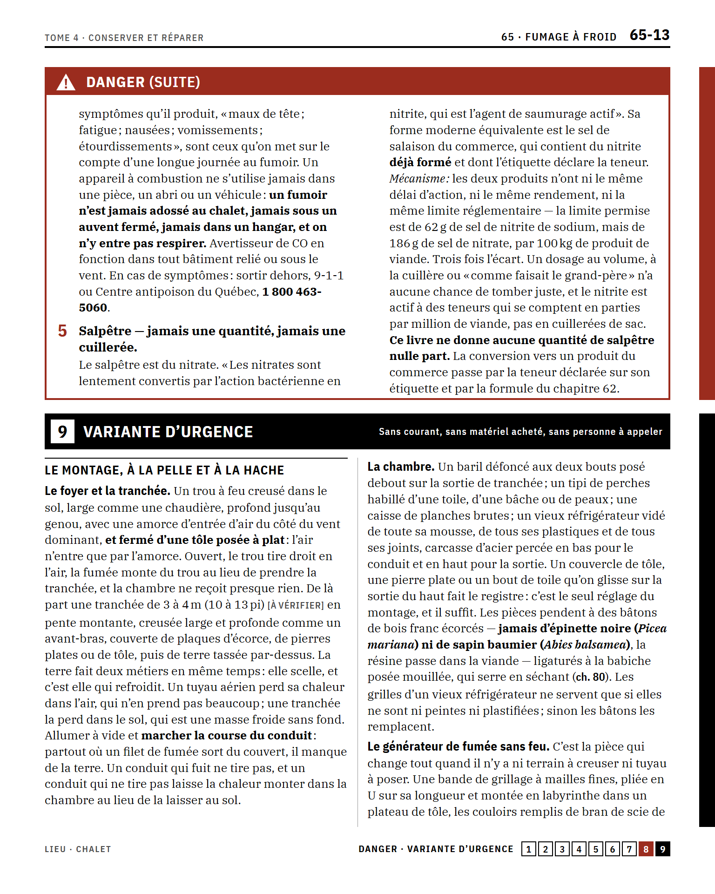
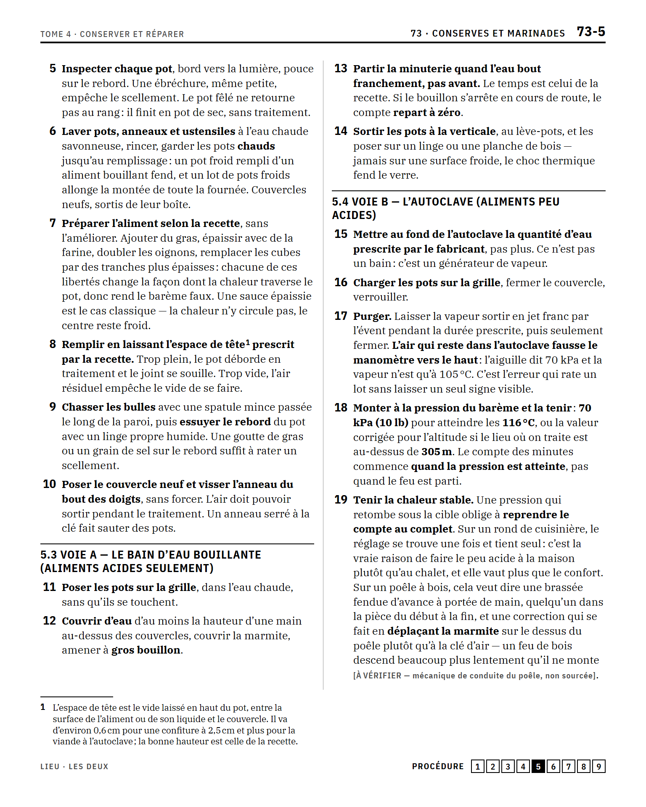

Couverture complète, tome 4. 16,95 × 10 po une fois rognée ; le fichier fait 17,2 × 10,25 po, avec un fond perdu de 0,125 po tout autour.
La tranche fait 0,95 po, largeur supposée pour 440 pages en papier standard. Elle se recale au calculateur de Blurb quand le nombre de pages est connu : une seule variable, --spine.
La quatrième dit le livre en deux phrases, donne le sommaire du tome et reprend un trait tiré d’une planche du tome.
L’encre fait tout le reste : titres, filets, chiffre, barre de série. Aucune image sur l’avant.
Droit : l’avant, la tranche et la quatrième du tome 1. N’entre jamais dans les pages.
Droit : la couverture du tome 2, rien d’autre. Il reste dehors : dedans, le seul rouge est celui du danger.
Droit : l’avant, la tranche et la quatrième du tome 3. N’entre jamais dans les pages.
Droit : l’avant, la tranche et la quatrième du tome 4. N’entre jamais dans les pages.
Droit : tout le texte, les titres, les filets, les carrés de section, le bandeau de la section 9, la pastille NON, les planches. Le 70 % : tome au titre courant, lieu au pied, [À VÉRIFIER]. Le 40 % : filets entre colonnes et dans les tableaux. Jamais de gris pour le texte courant.
Droit : le danger, rien d’autre. Bandeau et cadre de l’encadré, numéros des mécanismes, carré 8 du sommaire et de l’échelle, bande sur la tranche des pages, cadre du danger dans une planche. Jamais pour souligner ni pour décorer.
| Titre de chapitre | Sans Cond. Gras 38 pt, capitales, interligne 0,95 ; numéro 92 pt | 65Fumage à froid | ||||||||
| Carré de section | Sans Cond. Gras 13 pt, capitales +4 %, filet 2,5 pt ; carré noir 19 pt, chiffre 14 pt. Le 8 en rouge. | 3Pourquoi ça marche | ||||||||
| Section 9 | Le même en bandeau inversé, et une bande noire sur la tranche | 9Variante d’urgence | ||||||||
| Intertitre | Sans Cond. Gras 10/12 pt, capitales +5 %, filet 0,75 pt | B — Monter le fumoir | ||||||||
| Chapeau | Serif 12/15,5 pt, sur toute la largeur (section 1) | Le fumage à froid traite une pièce déjà salée avec de la fumée à une température qui ne provoque pas de coagulation des protéines. | ||||||||
| Texte courant | Serif 9,5/13 pt, colonne de 3,39 po, alinéa 1,1 em, césure. Environ 690 mots par page pleine. | La fumée de bois qui couve, et non qui flambe, transporte des phénols, des acides organiques et des composés carbonylés qui se déposent sur une surface humide et y restent. Ils ne traversent pas un jambon ni un filet épais. Ce qui se passe au cœur relève du sel, et de lui seul. | ||||||||
| Étape | Numéro Sans Cond. Gras 11 pt en marge, amorce en Serif gras | 5Séparer le foyer de la chambre. C’est la seule chose qui distingue mécaniquement un fumoir à froid d’un fumoir à chaud : le feu est ailleurs. | ||||||||
| Tableau | Serif 8,6/10,8 pt ; en-tête Sans Cond. Gras 7,6 pt capitales ; pastille NON |
| ||||||||
| Légende | Sans Cond. Gras 7,5 pt capitales +9 % au pied ; renvoi de suite en demi-gras italique 7,5 pt | Procédure · Planche 65-01 L’encadré continue page 65-13 | ||||||||
| Note de bas de page | Serif 7,8/10 pt, numéro Sans Cond. Gras, filet court de 0,9 po. Appel : Sans Cond. Gras à 70 % du corps | Remplir en laissant l’espace de tête1 prescrit par la recette.
1L’espace de tête est le vide laissé en haut du pot, entre la surface de l’aliment ou de son liquide et le couvercle. | ||||||||
| Titre courant | Sans Cond. Demi-gras 8,5 pt capitales +9 %, filet 1,5 pt ; tome en Moyen 7,5 pt, noir 70 % | Tome 4 · Conserver et réparer65 · Fumage à froid65-7 | ||||||||
| Folio | Sans Cond. Gras 12,5 pt : chapitre-page, au bord extérieur | 65-7 73-5 00-7 | ||||||||
| Échelle au pied | Carrés de 12 pt, chiffres Sans Cond. Demi-gras 7,5 pt ; la section en cours est pleine |
| ||||||||
| Consigne du ch. principal | Sans Cond. Gras 14,5/16,5 pt, une phrase ; l’explication suit en Serif 9,8 pt | Si l’avertisseur sonne : tout le monde dehors, et le compte des têtes se fait dehors. | ||||||||
| Bandeau danger | Sans Cond. Gras 12/14 pt, capitales, blanc sur rouge | Danger — monoxyde de carbone |
Page rognée 8 × 10 po. Le fichier fait 8,125 × 10,25 po : 0,125 po de fond perdu en tête, en pied et au bord extérieur, jamais au dos.
Zone utile 7 × 8,5 po. C’est aussi la zone des planches : une planche pleine page y entre au millimètre.
Deux colonnes de 3,39 po, séparées par 0,22 po et un filet à 40 %. Les titres de section, les tableaux et le chapeau passent sur les deux.
Marges de 0,5 po sur les côtés, reliure comprise, et de 0,75 po en tête et en pied, où logent le titre courant et l’échelle. Au verso, tout se retourne.









L’appel. Un chiffre en exposant, collé au mot, avant la ponctuation, en Sans Condensed gras à 70 % du corps. Il reste lisible dans une amorce en gras.
La note. Au pied de la colonne où tombe l’appel, sous un filet court de 0,9 po, en Serif 7,8/10 pt, numéro en Sans Condensed gras. Dans un cadre à une colonne, elle va au pied de la page.
La place. La note prend sa hauteur dans le cadre avant que le moteur juge si un bloc tient. Si l’appel passe à la page suivante, la note le suit.
Le numéro. Par chapitre, dans l’ordre des appels. Le moteur renumérote lui-même, quelle que soit l’étiquette écrite dans le Markdown.
Dans l’encadré danger, la note reste dans l’encadré, sous son texte et au-dessus de la coupe en pointillé.